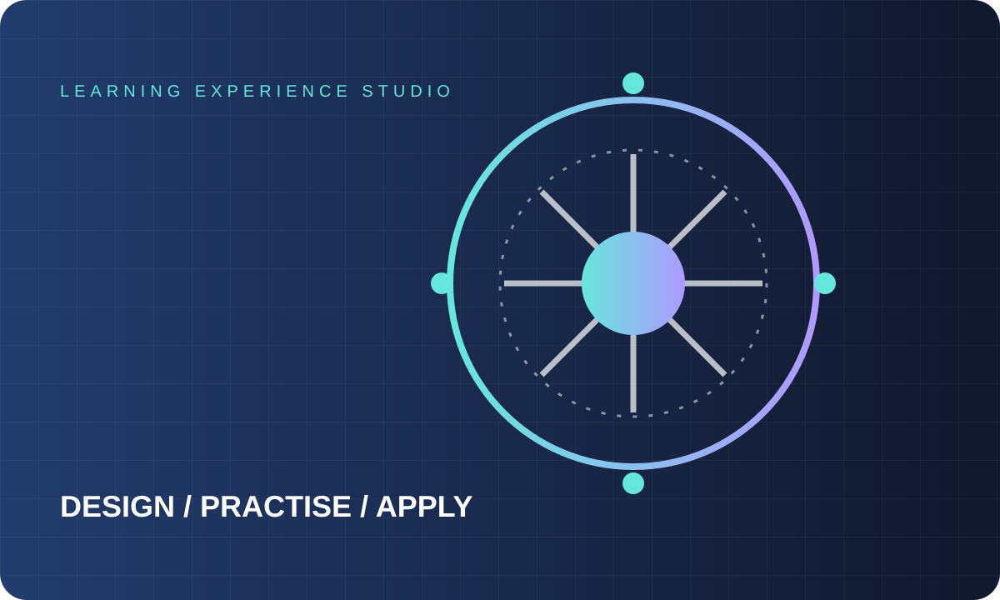
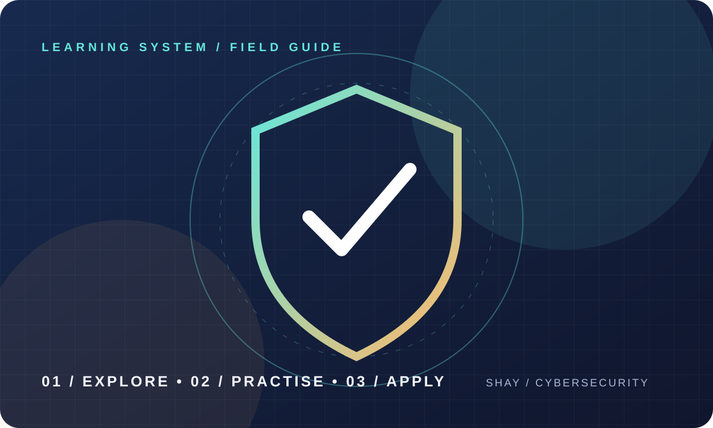
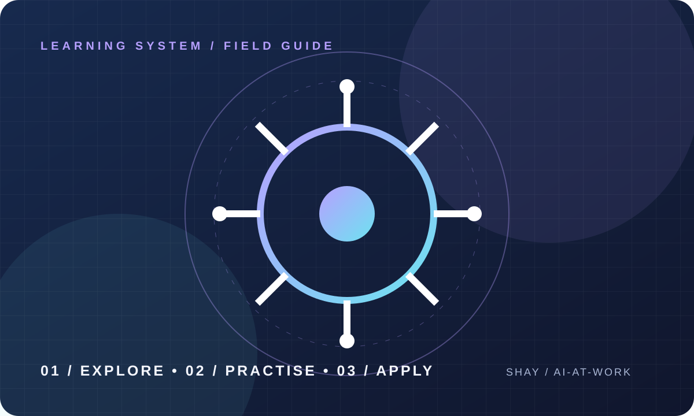
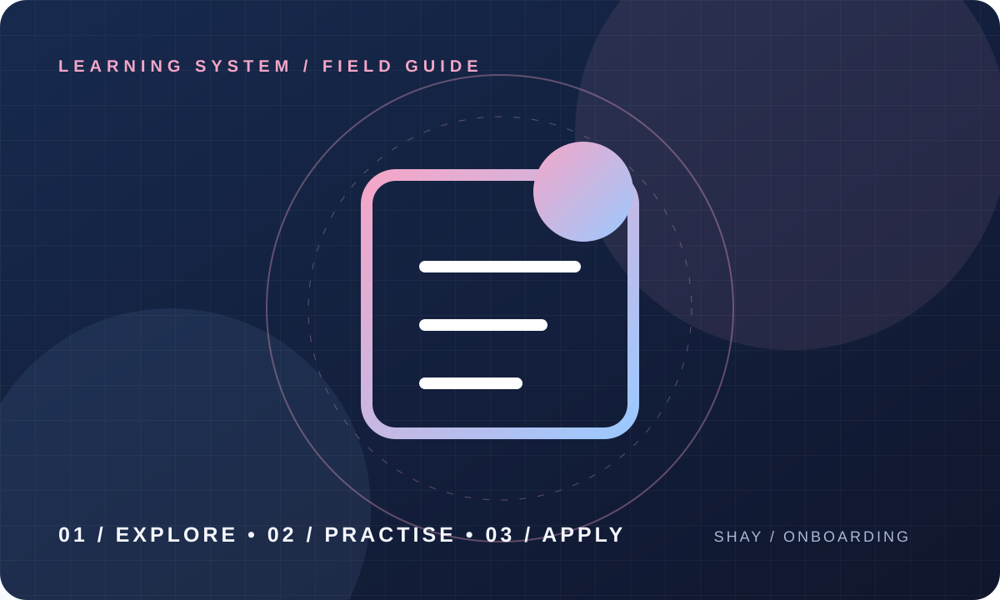

Learning, made experiential.
Seven original concept courses built as rich, scrolling HTML learning experiences. Each course blends purposeful content, custom graphic artwork, clear objectives, practical decisions and a knowledge check.

Choose a learning journey.
Each experience has its own visual identity and colour system, while sharing a consistent focus on clarity, accessibility and practical application.

01 / SECURITY CULTURECybersecurity Awareness
Turn everyday cyber risks into clear decisions people can recognise, practise and act on.
 02 / ETHICS & CULTURE
02 / ETHICS & CULTURECode of Conduct & Ethics
Translate workplace values into respectful, fair and accountable everyday actions.

03 / AI & DIGITAL SKILLSAI at Work
Use AI thoughtfully, from task selection and prompting to verification and human accountability.
 04 / INCLUSIVE DESIGN
04 / INCLUSIVE DESIGNDigital Accessibility
Apply the POUR principles to make digital learning more perceivable, operable, understandable and robust.
 05 / PEOPLE DEVELOPMENT
05 / PEOPLE DEVELOPMENTLeadership Development
Turn everyday manager conversations into opportunities for clarity, coaching and trust.
 06 / SUSTAINABILITY
06 / SUSTAINABILITYSustainability & ESG
Connect environmental, social and governance issues to practical decisions at work.

07 / EMPLOYEE EXPERIENCEEmployee Onboarding
Help new colleagues feel welcome, find support and become confident in their roles.